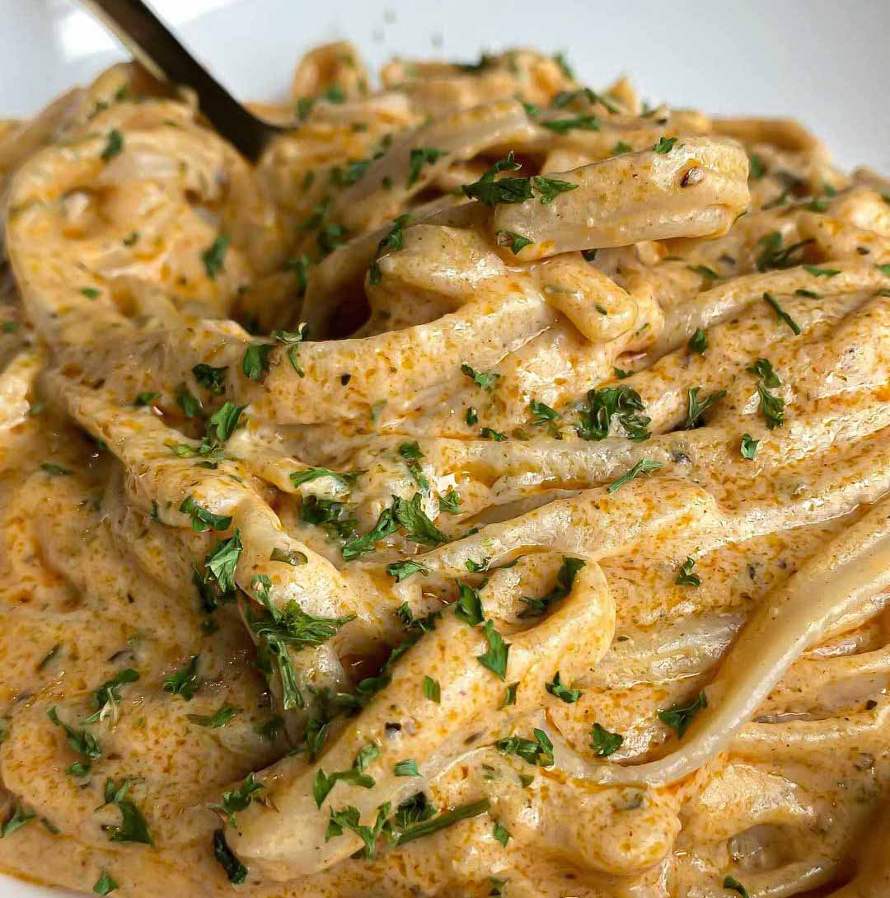

Creamy Vegan Buffalo Alfredo Pasta

Description
A seriously good vegan recipe for a Buffalo Alfredo pasta. Goated tbh. Credit goes to Good Old Vegan for this recipe :)
Ingredients
- Cooked pasta
- Dairy-free butter
- Dairy-free Buffalo sauce
- Olive oil
- Plant-based milk unsweetened and original
- Dairy-free cream cheese
- Dairy-free parmesan cheese
- Minced garlic
- Garlic powder
- Italian seasoning
- Garlic salt
- Salt & Pepper
- All-purpose flour
- Parsley
Steps
- Add the butter and olive oil to a nonstick skillet over medium heat and let the butter melt. Once melted, add in the minced garlic and let cook for 1-2 minutes.
- Sprinkle in the flour and use a whisk to stir.
- Now, add in the milk and cream cheese. Stir until the cream cheese has blended with the milk. Now, add in the seasonings, parmesan, and buffalo sauce. Stir with the whisk and reduce heat to low. Stir occasionally. Add in more milk if needed.
- Once the sauce has thickened add in the cooked pasta and stir.
- Serve warm with garlic bread, green veggies, or your preferred side dishes.
Homepage